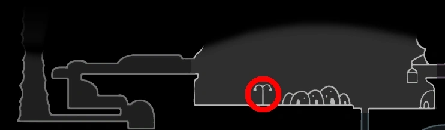
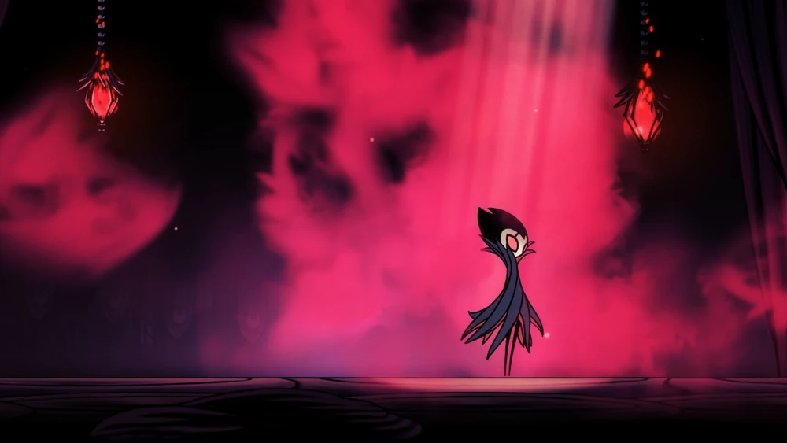

O CAVALEIRO
VAZIO
"O velho Rei de Hallownest... deveria estar desesperado para salvar seu pequeno mundo em ruínas. Os sacrifícios que ele impôs aos outros... tudo por nada."

História

O Cavaleiro Oco é o Receptáculo escolhido pelo Rei Pálido para selar a Radiância e salvar Hallownest
da Infecção. Assim como seus irmãos, ele é filho do Rei e da Rainha de Hallownest, nascido no
Abismo para ser infundido com o poder do Vazio. Como tal, ele não possui gênero.
Essa condição de nascimento também deveria tê-lo deixado sem mente, vontade e voz, para
impedir que a Radiância o influenciasse. No entanto, sua pureza foi mal avaliada,
manchada por uma ideia instilada, um vínculo com o Rei Pálido que o criou.
Abismo do Rei Pálido
O jovem Cavaleiro Oco sendo conduzido para fora do Abismo.
Apesar de sua impureza, o Cavaleiro Oco foi treinado e criado, eventualmente tornando-se um
Receptáculo adulto. A Radiância foi selada dentro dele e acorrentada no Templo do Ovo Negro ,
onde se esperava que contivesse a Infecção pela eternidade. No entanto, devido às impurezas
mencionadas, a Radiância ainda podia exercer influência. Isso acabou resultando no ressurgimento da
Infecção e na ruína do Reino.
Com o tempo, o Cavaleiro Oco desapareceu da memória do reino caído. Apenas o memorial no centro da
Cidade das Lágrimas testemunha seu sacrifício para salvar Hallownest.
Após algum tempo, o poder da Radiância irrompeu do Cavaleiro Oco, rachando sua casca e o infectando
completamente. Este evento foi o catalisador que trouxe o Cavaleiro de volta a Hallownest.
O Cavaleiro pode libertar e lutar contra o Cavaleiro Oco depois de matar os três Sonhadores que
selaram a entrada do Ovo Negro.
Eventos
O destino do Cavaleiro Oco está ligado ao fim da jornada do Cavaleiro. Ao matar o Cavaleiro Oco,
o Cavaleiro assume seu lugar no selamento da Radiância. Ao entrar em sua mente com a ajuda de
Hornet , o Cavaleiro pode destruir a Radiância. Ao final dessa luta, a Sombra do Cavaleiro Oco
aparece e revela uma brecha em sua cabeça, permitindo que o Cavaleiro desferir os golpes finais.
Os dois irmãos então retornam juntos ao Vazio.
O Cavaleiro Oco também faz parte inerentemente do ritual da Buscadora de Deuses . Ela busca
sintonizar a Radiância com o Lar dos Deuses através do Cavaleiro Oco. Ao fazer isso, ela
invoca o Vaso Puro , sua forma não infectada. Assim que o Cavaleiro derrota o Vaso Puro no
Panteão do Cavaleiro , a Radiância alcança o Lar dos Deuses.
Após o Cavaleiro derrotar a Radiância Absoluta no ápice do Panteão de Hallownest , a Infecção
desaparece de Hallownest. O Cavaleiro Oco pode então ser visto saindo do Ovo Negro, livre da
Infecção. Ele é recebido do lado de fora por uma Vespa assustada.
Localização
Grimm está localizado em Dirtmouth depois de ter sido convocado pela Lanterna do Pesadelo nos Penhascos Uivantes.

Localização em Dirtmouth
Imagens
